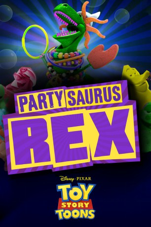

#10274 Toy Story Toons - Partysaurus Rex
 
 IMDB-Wertung: 7.6 / 10
IMDB-Wertung: 7.6 / 10  Metascore: 0
Metascore: 0 
Nach einem gemeinsamen Bad mit Bonnie verwandelt sich der zuvor von seinen Freunden als „Party-Muffel“ verspottete Rex zum „Partysaurus Rex“. Zur Freude der Badspielzeuge lässt er die leere Wanne wieder volllaufen. Das Ganze endet mit einer gewaltigen Überschwemmung und einem nun etwas selbstbewussteren Rex, dessen Ruf als Partysaurus bis zu den Pool-Spielzeugen vorgedrungen ist.
Jahr: 2012
Dauer: 6 Minuten
FSK:
Land: USA Studio: Walt Disney Studios Motion PicturesTonspuren:
Untertitel: Englisch,
Auflösung: 1080p (1920x1080) Größe: 637 MB
Genre: Komödie, Fantasy, Animation/Trick, Familie, Kurzfilm
Regisseur: Mark A. Walsh, Dylan Brown
Drehbuch: Mark A. Walsh, Mark A. Walsh, John Lasseter
Soundtrack: BT
Darsteller:
Datei: X:\Kinder Disney HD\Toy Story\Toy Story Toons - Partysaurus Rex (2012, FSK, 1920x1080).mkv seit 27.12.2018
Festplatte: Kinder-Filme+Trick
 Es gibt insgesamt 13 Filme in der Gruppe 'Kinder Disney HD\Toy Story'
Es gibt insgesamt 13 Filme in der Gruppe 'Kinder Disney HD\Toy Story'